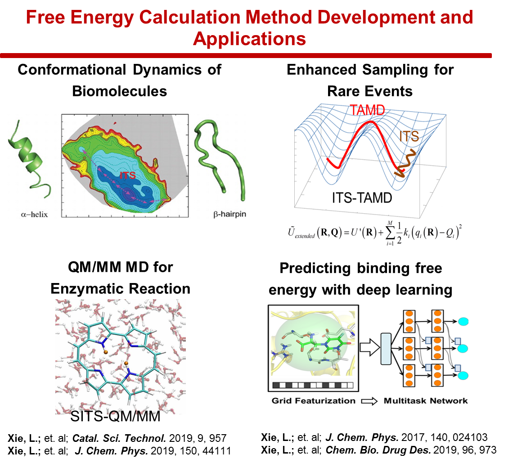

Multi-scale molecular modeling and free energy calculations
QM·M hybrid potential with molecular dynamics simulations are adopted to exploit enzymatic reaction mechanism.
Machine Learning
Classical machine learning and deep learning methods are used to predict protein-ligand / protein-peptide binding free energy.
Computer aided drug discovery
Molecular docking, MM/GBSA, MM/PBSA and molecular dynamics simulations were integrated to increase virtual screening power in drug discovery.
Bioinformatics
Various computational tools were applied for elucidating processes of biomolecules.
